Canciones destacadas
Radio Ga Ga
1984
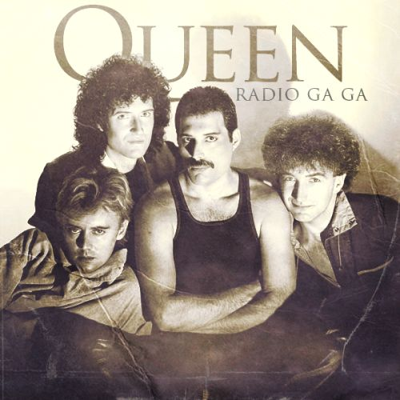
I want to break free
1984
Under Pressure
1982
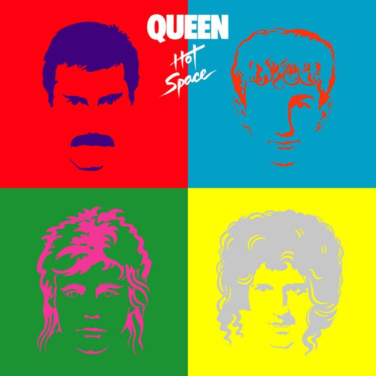
Bohemian Rhapsody
1975
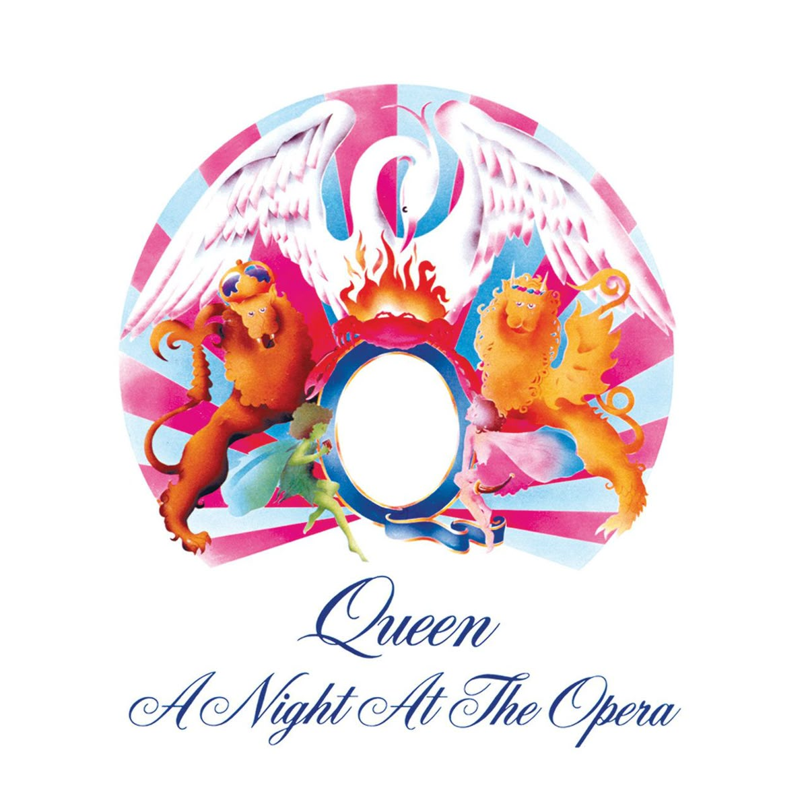
 @officialqueenmusic
@officialqueenmusic
Bohemian Rhapsody
Queen es una banda de rock británica formada en Londres en 1970. La banda está compuesta por el vocalista Freddie Mercury, el guitarrista Brian May, el baterista Roger Taylor y el bajista John Deacon. Son conocidos por su estilo musical ecléctico, que combina elementos de rock, pop, ópera y teatro. A lo largo de su carrera, Queen ha lanzado numerosos álbumes exitosos y ha producido una serie de éxitos icónicos, como "Bohemian Rhapsody", "We Will Rock You", "We Are the Champions" y "Somebody to Love". Su música se caracteriza por armonías vocales complejas, riffs de guitarra distintivos y letras memorables. La banda ha sido reconocida por su innovación en la producción musical y sus actuaciones en vivo enérgicas y teatrales. Queen ha dejado un legado duradero en la historia del rock y sigue siendo una de las bandas más influyentes y queridas en la música popular.
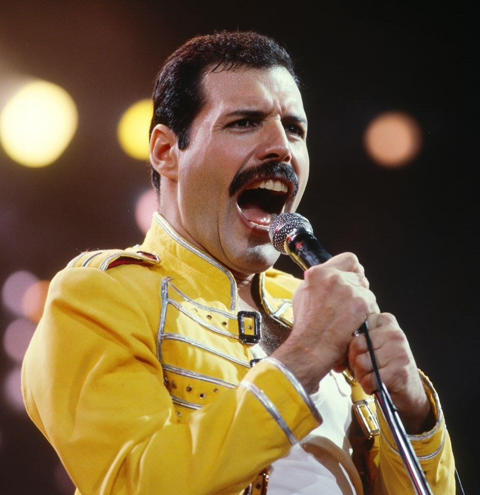
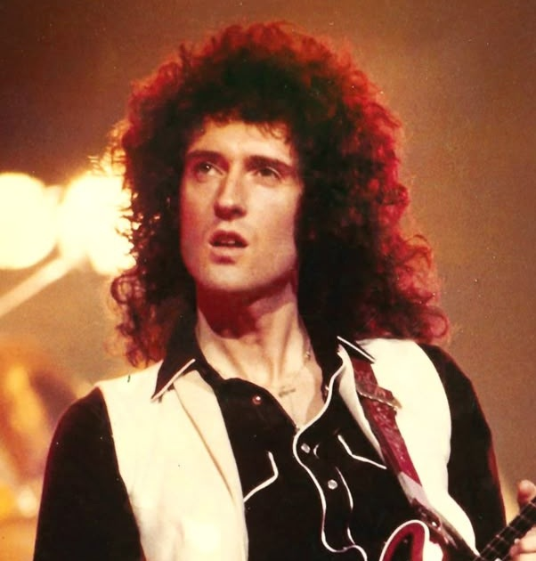
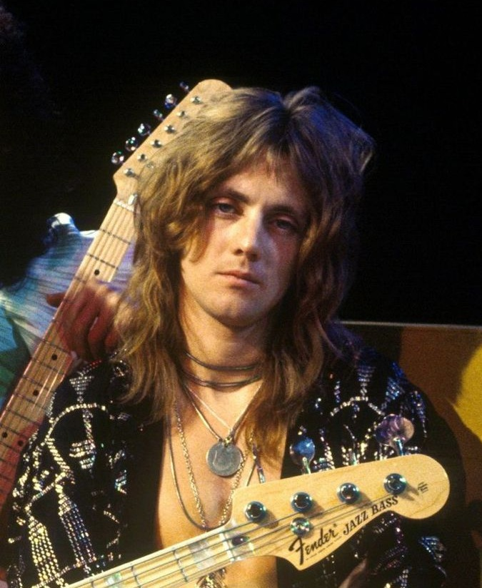
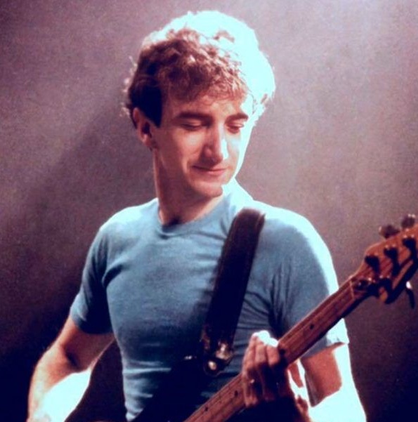
Reino Unido
Brian May y Roger Taylor iniciaron el proyecto buscando un rock ambicioso que fusionara ópera y experimentación sonora tras su banda previa. La llegada de Freddie Mercury resultó crucial, transformando esa visión inicial en una propuesta artística única e inigualable. Juntos cimentaron las bases de un sonido grandilocuente que definiría su futuro legado musical.
Mercury dotó al grupo de identidad, sugiriendo el nombre "Queen" y su estética. Su visión teatral convirtió el experimento en un concepto definido y provocador. La banda adoptó así una postura desafiante en la vibrante escena londinense.
La formación clásica se cerró con John Deacon, quien aportó estabilidad rítmica. Su bajo melódico equilibró el sonido, consolidando la alineación definitiva del grupo. Con los cuatro miembros, alcanzaron la cohesión necesaria para hacer historia.
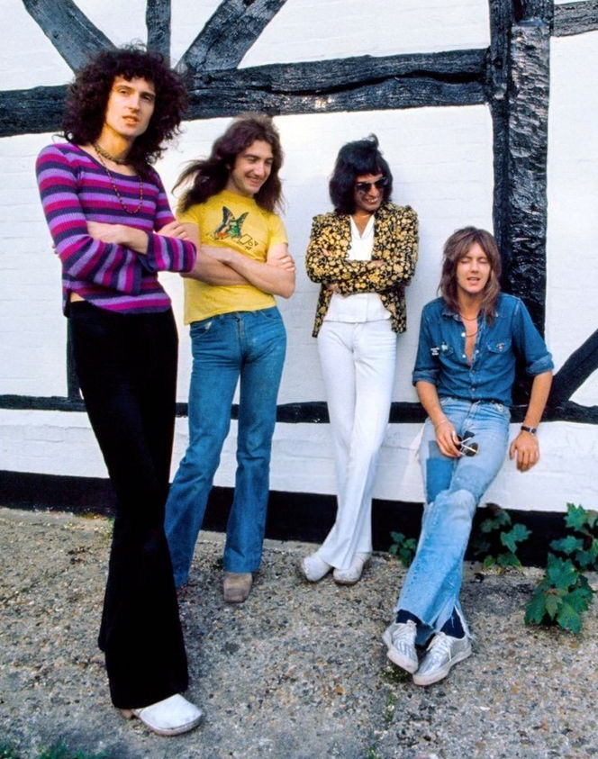
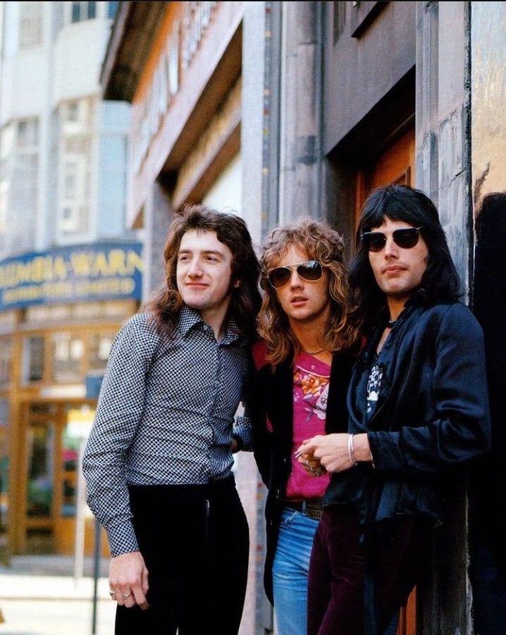
Reino Unido
Londres fue su escenario principal, donde ensayaron y tocaron en pequeños locales. Cada actuación en vivo servía para pulir su estilo y ganar confianza escénica. La ciudad fue testigo del perfeccionamiento técnico durante sus primeros pasos.
Preparando su debut, experimentaron con armonías vocales y estructuras complejas. Buscaban una sonoridad majestuosa que rompiera los moldes del rock tradicional. Este trabajo inicial definió la riqueza musical de su futura discografía.
Truro les brindó un refugio tranquilo para afinar ideas lejos del ruido urbano. Allí se centraron en los detalles, cimentando el estilo que conquistaría el mundo. Fue un periodo vital de introspección antes de lanzarse al estrellato.
Reino Unido
Con A Night at the Opera, la banda redefinió los límites del rock y su ambición. Londres sirvió como laboratorio donde esa revolución operística cobró vida y forma. Transformaron su creatividad desbordante en una obra maestra atemporal.
La capital vio consolidarse su identidad bajo el liderazgo absoluto de Mercury. Dejaron de solo experimentar para dominar la escena con total autoridad artística. El grupo alcanzó una madurez que los separó del resto de sus contemporáneos.
Para 1976 llenaban recintos históricos, priorizando una puesta en escena vital. El rock británico entró en una nueva era teatral gracias a su estética única. La imagen se volvió tan trascendental como su propia propuesta musical.
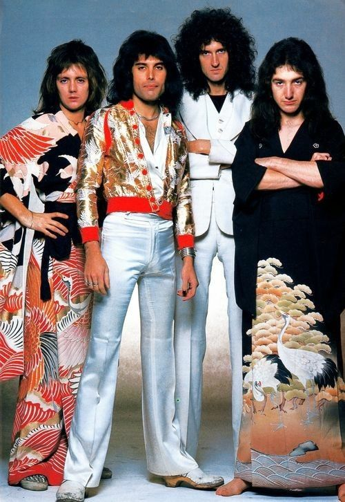
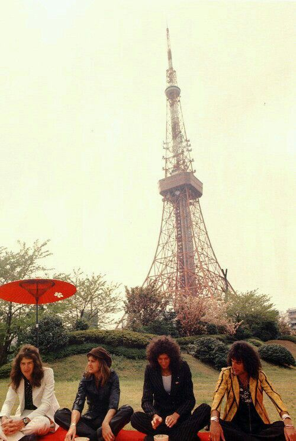
Francia
París marcó su consagración europea, triunfando fuera del territorio británico. La devoción del público confirmó que su música cruzaba cualquier frontera cultural. Queen demostró allí que su impacto no conocía límites geográficos.
Perfeccionaron su directo, diseñando cada concierto como una experiencia total. Eliminaron cualquier improvisación en favor de una ejecución técnica impoluta. Cada show se convirtió en una demostración milimétrica de poder y precisión.
Al cerrar 1977, ya eran una potencia internacional entre los gigantes del género. El mito comenzaba a construirse sobre cimientos sólidos de éxito y popularidad. Se habían establecido firmemente en la cima del rock mundial.
Brasil
A inicios de los ochenta, la banda ascendió a una liga superior con un estilo directo. Sus composiciones se volvieron potentes himnos diseñados para colmar estadios. El dominio absoluto del directo se transformó en su fortaleza más indiscutible.
Río de Janeiro marcó un hito monumental en 1985 ante multitudes masivas. Aquel evento consolidó su estatus planetario y demostró su autoridad escénica. Pocos grupos lograban controlar audiencias de tal magnitud con esa maestría.
Freddie alcanzó su cima carismática, equilibrando cálculo y libertad total. Cada gesto suyo invitaba al público a dejar de ser espectador para participar. Logró una comunión única donde la audiencia era parte vital del show.
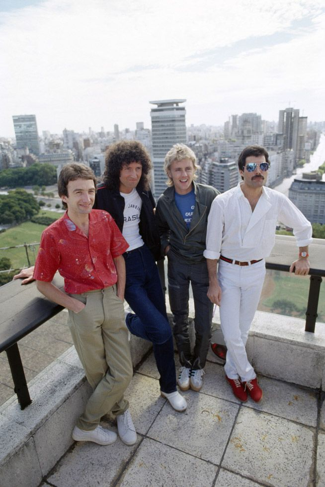
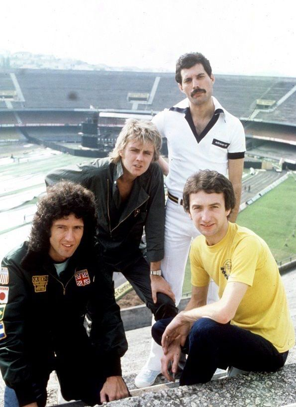
Hungría
Budapest simbolizó un hito histórico al cruzar el Telón de Acero en la Guerra Fría. Rompieron barreras políticas infranqueables uniendo al público con su arte. Su música demostró ser un lenguaje universal más fuerte que cualquier frontera.
Las giras de esta época fueron demostraciones de precisión técnica absoluta. Sonido, imagen y narrativa operaban como una unidad indivisible y perfecta. No existía margen para el error en un espectáculo ejecutado sin concesiones.
Esta etapa los consagró como una fuerza irrepetible en los escenarios mundiales. Su legado trascendió los discos para centrarse en la experiencia en vivo. El espectáculo mismo se transformó en un capítulo vibrante de la historia del rock.
Suiza
A finales de la década iniciaron una fase de profunda introspección y madurez artística. Aunque su energía vital permanecía intacta, el enfoque creativo se volvió mucho más deliberado. Cada decisión musical cargaba ahora con un peso definitivo y trascendental.
Montreux emergió como su refugio esencial, brindándoles calma y control absoluto en el estudio. El entorno sereno les permitió trabajar con libertad, puliendo obras de una profundidad inédita. Allí encontraron la paz necesaria para plasmar emociones complejas en su música.
La producción sonora alcanzó cotas de excelencia técnica y una precisión extraordinaria. Construían cada tema capa por capa, sin permitir concesiones y cuidando cada detalle al máximo. La vasta experiencia acumulada se reflejaba claramente en la sofisticación de los arreglos.
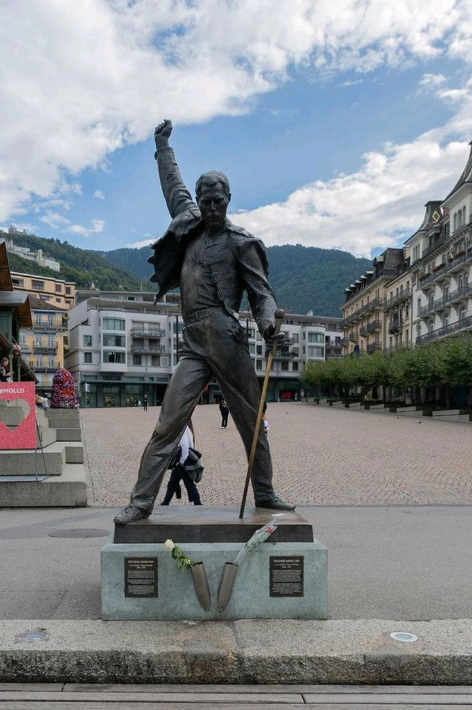
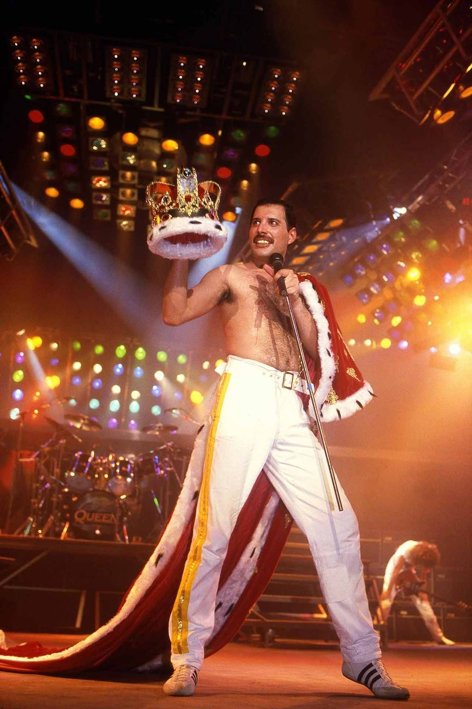
España
Barcelona simbolizó la fusión suprema entre el rock y la ópera mediante la unión con Caballé. Esta colaboración audaz abrió territorios inexplorados, rompiendo barreras estilísticas convencionales. Fue una declaración de ambición ilimitada que redefinió los géneros musicales.
Mercury mostró una entrega absoluta al arte, dotando a su voz de una intensidad conmovedora. Sus interpretaciones ganaron en humanidad, transmitiendo una urgencia y verdad desgarradoras. Cada nota cantada reflejaba la pasión inagotable de un artista en su plenitud.
El ciclo concluyó con una sensación de culminación creativa, ajenos a las modas pasajeras. Ya no buscaban validación externa, sino cerrar su historia bajo sus propios términos artísticos. Escribieron así su epílogo final con una dignidad y grandeza inigualables.
Alemania
Tras cesar su actividad, la música de Queen trascendió hacia una dimensión histórica. Su obra dejó de ser novedad para leerse desde la memoria colectiva y el legado perdurable. El impacto de sus creaciones se volvió atemporal, superando la inmediatez del momento.
Múnich quedó grabada como el corazón creativo de sus últimos años de trabajo en el estudio. Allí gestaron piezas complejas, vinculando la ciudad a su etapa más emocional y profunda. Aquellos muros guardaron para siempre la esencia de su producción final.
La figura de Mercury se transformó en un mito cultural de inmensas proporciones. Su voz adquirió un carácter casi sagrado, dotando a cada canción de una carga emotiva renovada. Los seguidores comenzaron a venerar su legado artístico como un tesoro inagotable.
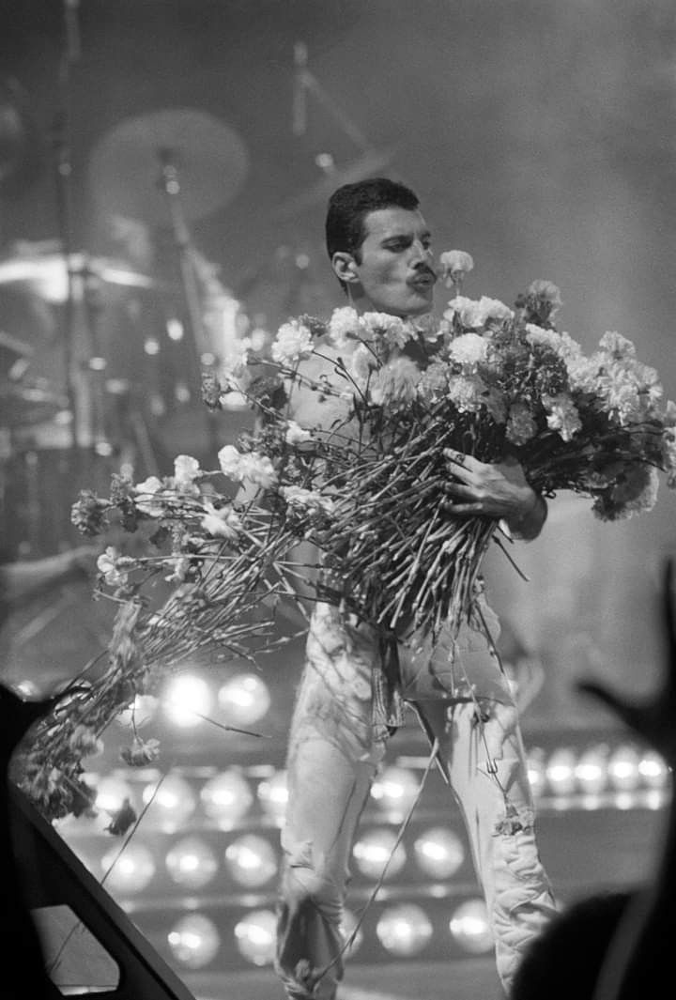
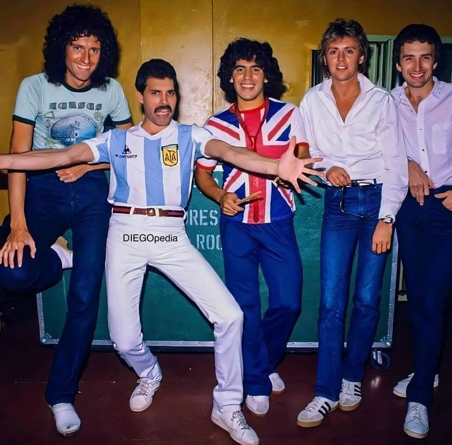
Argentina
Buenos Aires encarnó la devoción inquebrantable del público latinoamericano hacia el grupo. La intensa conexión demostró que su mensaje superaba cualquier barrera idiomática o generacional. La lealtad de esta audiencia confirmó la universalidad absoluta de su propuesta.
El catálogo cobró nueva vida mediante homenajes y reediciones que ampliaron su vasto alcance. La banda dejó de existir solo en el presente para proyectarse hacia la eternidad musical. Su repertorio se revitalizó, asegurando su vigencia para las futuras generaciones.
Esta fase los consolidó definitivamente como un patrimonio musical global e indiscutible. Trascendieron su estatus de banda para convertirse en un referente cultural de primer orden. Lejos de ser un final, aquello supuso la consagración absoluta de su leyenda.
España
La banda resurgió en Europa con una energía vibrante, consolidando su legado ante nuevas generaciones. Barcelona fue el epicentro donde sus clásicos resonaron con fuerza renovada y gran emotividad. Aquellos conciertos marcaron un hito decisivo, fusionando la nostalgia con el presente.
Centraron sus esfuerzos en giras que mezclaban gran espectáculo visual con una solemne reverencia histórica. Wembley destacó por su majestuosidad, logrando una conexión masiva e inmediata con las multitudes. Cada interpretación fue diseñada meticulosamente para ofrecer un viaje emocional inolvidable.
May y Taylor revitalizaron los éxitos con arreglos que aportaron un aire fresco y contemporáneo. La química intacta del grupo demostró que su historia musical estaba lejos de concluir. Cada nota ejecutada celebraba el virtuosismo técnico y la pasión que definieron su sonido.
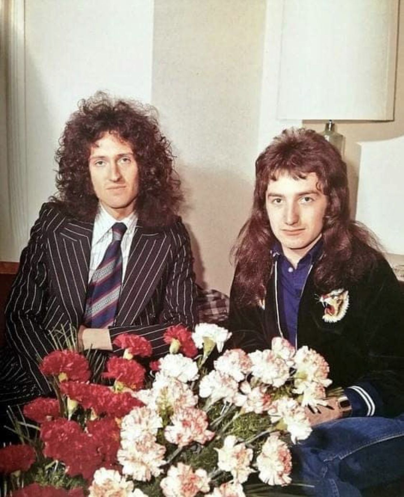
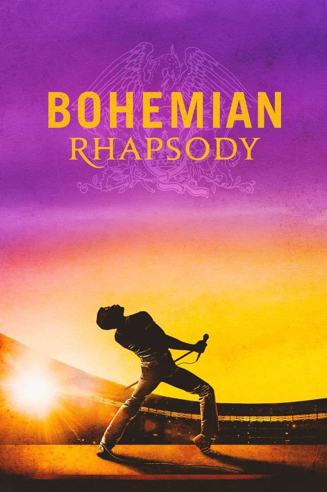
Reino Unido
Aunque ausente, la figura de Mercury inspiró cada velada a través de grabaciones y emotivos homenajes. Su inmensa sombra artística se sentía en el escenario y en la devoción incondicional del público. Lograron mantener viva su esencia original sin renunciar a la evolución moderna.
La repercusión de estas giras reafirmó su estatus como un fenómeno global indiscutible y vigente. La crítica alabó su capacidad para fusionar el despliegue visual con la excelencia sonora absoluta. Estas presentaciones establecieron un nuevo estándar para los grandes espectáculos de rock.
Este período selló una etapa de gloria tardía, consolidándolos como íconos eternos de la música. Cada concierto sirvió como recordatorio de su influencia perdurable en la cultura pop mundial. Dejaron así una huella imborrable que trasciende el tiempo y las generaciones.



@officialqueenmusic